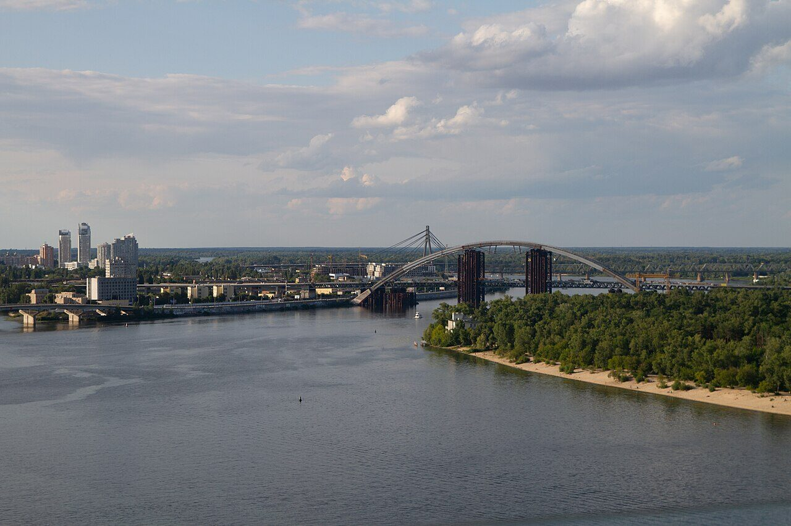

Russian Missiles Hit Three Kyiv Bridges Over the Dnipro in a Second Strike on the City's Crossings in a Week
Kyiv's mayor called it the biggest attack yet on the routes that join the two halves of the capital. At least eight people were killed across Ukraine, and the toll was still being counted.

KYIV — Russian ballistic missiles damaged three of the bridges that carry Kyiv across the Dnipro River in an overnight attack into Friday, November 20, the city's mayor said, in the second assault on the capital's crossings in less than a week.
Mayor Vitali Klitschko said the Podilskyi, Darnytskyi and Pivdennyi (Southern) bridges were hit. Traffic was stopped on the Podilskyi bridge, while the other two stayed open with restrictions. He called it the biggest attack since the start of the full-scale war on the routes that connect the city's left and right banks, urged residents to avoid driving and asked employers to let staff work from home where they could.
The toll
At least eight people were killed across Ukraine, according to reports from Al Jazeera and Ireland's RTÉ, and the Kyiv Independent put the figure at nine or more as reports came in. Counts from Kyiv itself ranged from three to seven dead as rescuers worked. Those numbers were still changing on Saturday.
A week of strikes on the crossings
On Tuesday, November 17, Russian missiles struck Kyiv's North and South bridges. That attack cut water and power in parts of the city, partly halted a metro line and forced buses and trolleybuses onto new routes.
Russia's defence ministry said it was aiming at road and rail bridges used to move weapons and military equipment. The strikes followed a promise by Vladimir Putin to hit back after Ukraine attacked the bridge linking Russia to occupied Crimea, which Russian-installed officials again closed to traffic.
Why the bridges matter
Kyiv sits on both sides of the Dnipro. Its bridges carry commuters, freight, the metro and utility lines between the two halves of a city of roughly three million people, so every hit is felt in homes and workplaces well beyond the damaged spans.
Russia is now targeting the bridges that hold a capital city together. What should Europe and Ukraine's allies do next?
Tell the World Desk: info@worldnewswirepress.com or comment on Instagram and Facebook.
Sources
- Meduza: Russian missile and drone attack on Kyiv damages three Dnipro bridges, mayor says
- Kyiv Independent: 3 Kyiv bridges struck in massive Russian aerial assault on Ukraine
- Kyiv Post: Russian Ballistic Strikes Damage 3 Kyiv Bridges, Spark Fires
- Al Jazeera: Russia unleashes barrage of missiles on Ukraine, killing at least 8
- RTÉ: Eight killed in 'massive' Russian attacks on Ukraine
- The Moscow Times: 8 Killed Across Ukraine as Russia Strikes Bridges in Kyiv
- France 24: Russian strikes hit two key bridges in Kyiv, disrupting water and power supplies
Reported and written by the World Desk from the sources listed above; no sentences are copied from other outlets. Approved for publication by Terry Bryant, Editor (directed Nov 21, 2026). Spotted an error? See our corrections policy.